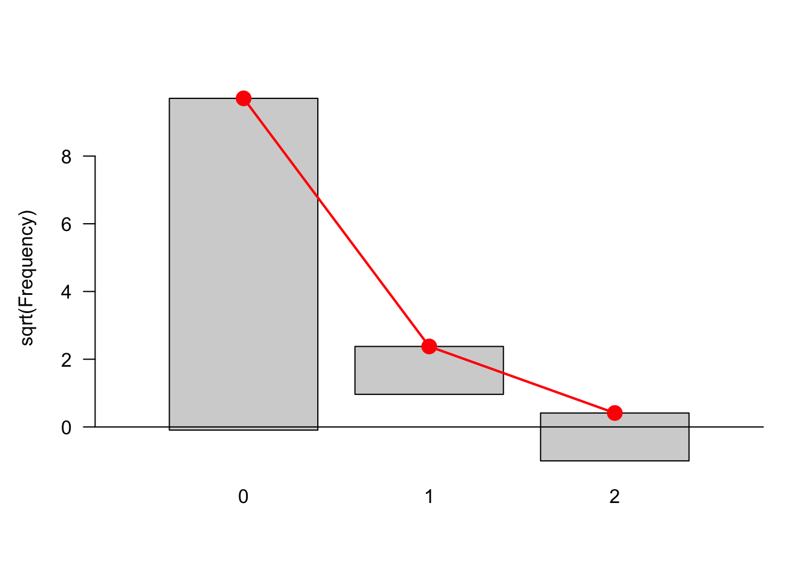
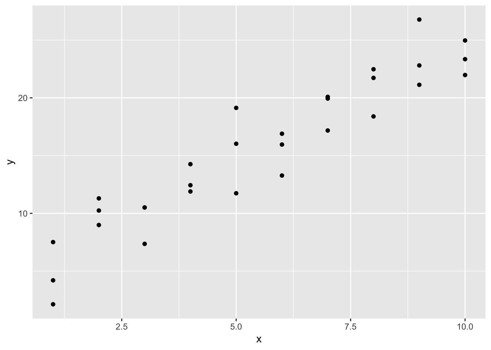

Chapter 4 High-Quality Graphics in R
一说作图，肯定绕不开ggplot2，围绕这个包已经形成一个生态了。本章也是重点介绍ggplot2系在生命科学领域的应用，按一维、二维……多维讨论，并介绍分子生物学领域“沿序列（along-sequences）”的作图。
本章目标如下：
- 学习通过可视化快速灵活探索数据。
- 做图，漂亮直观的图，用在论文和研究中的。
- R作图基础。
- 理解作图的语法概念和逻辑。
- 学习ggplot2的作图方法
- 在一维、二维、三维到五维展示数据，探索分面操作（faceting）
- 探索分子生物学书中“沿基因组”作图，或沿其他序列，如肽链（peptides）。
- 讨论一些能互动的图的做法。
4.1 R作图基操
R程序中自带DNase这个数据，里面包含Run，conc， 和density三列，Run是分析批次，conc是使用的蛋白密度（concentration）,density是测量的光密度。
## Grouped Data: density ~ conc | Run
## Run conc density
## 1 1 0.04882812 0.017
## 2 1 0.04882812 0.018
## 3 1 0.19531250 0.121
## 4 1 0.19531250 0.124
## 5 1 0.39062500 0.206
## 6 1 0.39062500 0.215
然后对基本作图进行定制，通过xlab，ylab，pch（plot character）参数设置。其中对attr的使用值得关注一下。
## Classes 'nfnGroupedData', 'nfGroupedData', 'groupedData' and 'data.frame': 176 obs. of 3 variables:
## $ Run : Ord.factor w/ 11 levels "10"<"11"<"9"<..: 4 4 4 4 4 4 4 4 4 4 ...
## $ conc : num 0.0488 0.0488 0.1953 0.1953 0.3906 ...
## $ density: num 0.017 0.018 0.121 0.124 0.206 0.215 0.377 0.374 0.614 0.609 ...
## - attr(*, "formula")=Class 'formula' language density ~ conc | Run
## .. ..- attr(*, ".Environment")=<environment: R_EmptyEnv>
## - attr(*, "labels")=List of 2
## ..$ x: chr "DNase concentration"
## ..$ y: chr "Optical density"
## - attr(*, "units")=List of 1
## ..$ x: chr "(ng/ml)"## $x
## [1] "DNase concentration"
##
## $y
## [1] "Optical density"## density ~ conc | Run
## <environment: R_EmptyEnv>然后结合如何设置参数，可以有所体悟。
plot(DNase$conc, DNase$density,
xlab = paste(attr(DNase, "lable")$x, attr(DNase, "units")$x),
ylab = attr(DNase, "labels")$y,
pch = 3,
col = "blue"
)
4.2 一个数据实例，引入ggplot2
安装一个包 BiocManager::install("Hiiragi2013")，然后载入。这个包是小鼠早期分裂过程中信号增强的数据集。
## ExpressionSet (storageMode: lockedEnvironment)
## assayData: 45101 features, 101 samples
## element names: exprs
## protocolData
## sampleNames: 1 E3.25 2 E3.25 ... 101 E4.5 (FGF4-KO) (101 total)
## varLabels: ScanDate
## varMetadata: labelDescription
## phenoData
## sampleNames: 1 E3.25 2 E3.25 ... 101 E4.5 (FGF4-KO) (101 total)
## varLabels: File.name Embryonic.day ... sampleColour (8 total)
## varMetadata: labelDescription
## featureData
## featureNames: 1415670_at 1415671_at ... AFFX-TrpnX-M_at (45101
## total)
## fvarLabels: symbol genename ensembl
## fvarMetadata: labelDescription
## experimentData: use 'experimentData(object)'
## Annotation: mouse4302## [1] 45101 101这101列，是代表101个细胞，45101行，每一行是芯片/阵列（array）探测到的基因。数据通过RMA方法进行正态化。原始数据也在包里，a就是，也可以在EMBL-EBI数据中，以EMTAB-1681查询。
一个细胞长得这样，具体怎么转变成数字，咱也不知道，暂时也不问了，不影响学习方法。

Figure 4.1: 单细胞免疫荧光图像，E3.5小鼠胚胎，对Serpinh1染色
## File.name Embryonic.day Total.number.of.cells lineage genotype
## 1 E3.25 1_C32_IN E3.25 32 WT
## 2 E3.25 2_C32_IN E3.25 32 WT
## ScanDate sampleGroup sampleColour
## 1 E3.25 2011-03-16 E3.25 #CAB2D6
## 2 E3.25 2011-03-16 E3.25 #CAB2D6这组数据，主要是记录细胞大小、基因型、从胚胎哪部分获取的，以及读取时间、原始数据文件名称等。
差一些资料，这里有点有用的，记录一下。http://veda.cs.uiuc.edu/CompGen2017/